Kitchen Remodel Renders
Photoreal renders of the new kitchen, dining room, powder room and garage, and the living room's furnishings, built from the floor plan, site measurements, the ordered appliances and the chosen finishes. Each page compares options with identical cameras and lighting.
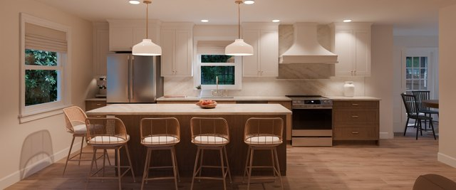
Kitchen Floor Comparison
One floor runs through the kitchen, dining room and powder room. The living room keeps its existing red oak in every option.
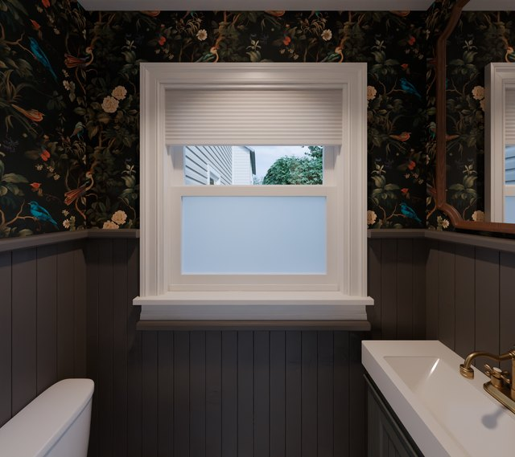
Powder Room: Wallpaper and Lower Wall
Three Painted Paper wallpapers at their true repeat size, each with or without a half-height lower wall from your pins; the zellige now comes in a deep green and a burnt auburn. Frosted lower sash, the existing cellular shade, Bailey vanity in Vogue Green.
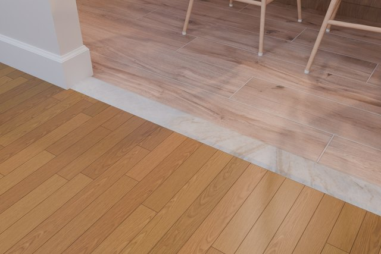
Living Room Threshold
Where the new kitchen floor (Daltile Palomino here) meets the living room's existing red oak, in the Wall B opening: a bevelled saddle across the 4½ in wall, in red oak or honed Taj Mahal.
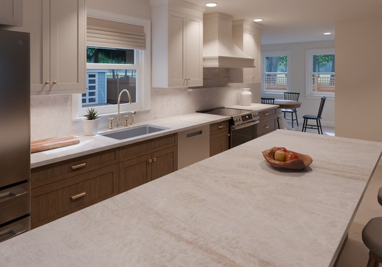
Countertop Stone
The counters, island top and full-height slab backsplash in one stone. Taj Mahal is the current pick; your two Earthstone quartzites; Perla Santana is shown honed and polished (your second link repeated the first, and Earthstone lists the same slab both ways).
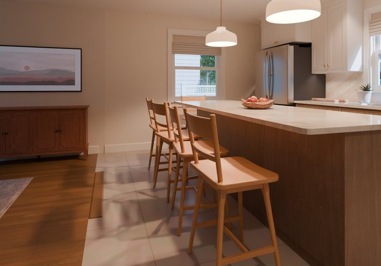
Counter Stools
Five stools at the island's seating side. The TYBOATLE rattan stool is the current pick; your two new candidates in the same spots.
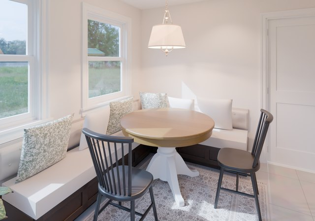
Dining Room: Corner Bench, Walls, Rug and Light
Your table in its current spot or tucked into an L banquette in the corner opposite the powder room, from your pins; the benches now run to 6 in from the door to the garage (in the west wall now) and about 2 ft further along the windows. Mix the bench, wall paneling, rug and a light over the table; the evening view shows what the light does. New: a double-pedestal table and a washable rosette rug. Paneling colours have their own page.
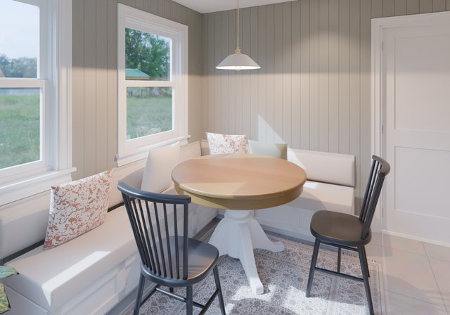
Dining Room: Paneling Colour
The V-groove paneling in five paints, floor to ceiling or to 54 in under a ledge, in one styled corner: the Shaker banquette, the rug and the cone pendant. In Blender, the Kitchen panel's Dining room section has a colour picker for any other paint.
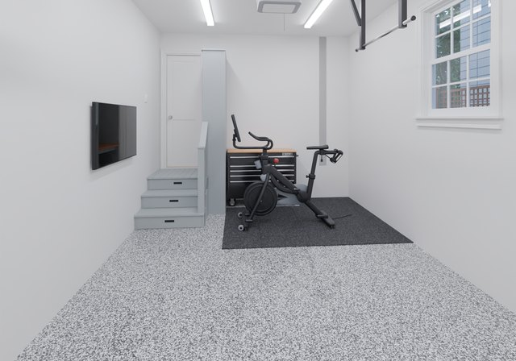
Garage: Workout Corner, Car and Floor
The fit-out as it stands (not final): a 30 in landing with a coat organizer the same width, three steps down with shoe drawers in the risers, your YUKON cabinet by the landing, gym rubber, a stationary bike facing a TV on the north wall by the steps, a ceiling pull-up bar and LED shop lights. Swap the workout gear, park a Caterham Seven in one of three liveries, and try the epoxy blends and a hexagon light grid.
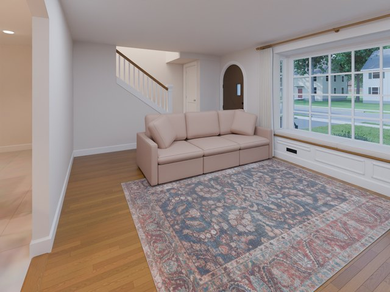
Living Room: Sofa, Rug, TV Wall and Curtains
The living room furnished with the new ideas: the bay window back with its window seat and cushions, a Frame TV where today's TV hangs with a sideboard under it, curtains on a brass rod across the bay, and a rug under the sofa. The sofa is pushed toward the front wall so the way from the kitchen to the stairs runs along the far wall. Compare the 98 in sofa in three velvets with a smaller 84 in one and your current couch. The TV shows a placeholder picture in Art Mode.
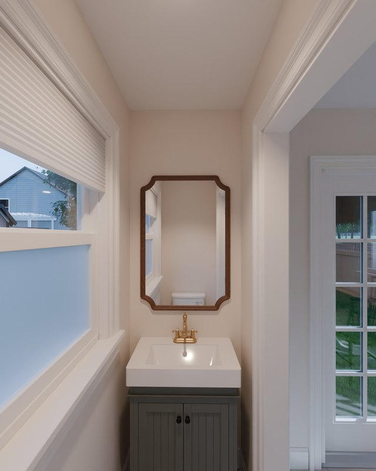
Powder Room: Vanity and Zellige
Three more vanities beside your Bailey, each in the same spot on the east wall, with the lower wall plain or in zellige: a deep green or a burnt auburn. The room is only 24½ in deep: the two Merax vanities leave 20.9 in in front of the toilet, just under the usual 21 in minimum.
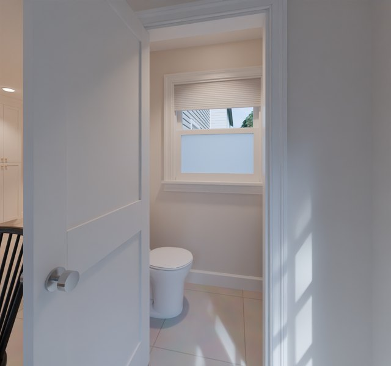
Powder Room: Door and Mirror
The 28-inch swing door, or a 24-inch ARK DESIGN pocket door that slides into the wall toward the toilet (shown half open so its panels read); and the placeholder mirror or the WallBeyond walnut mirror. Bailey vanity in Vogue Green, painted walls.
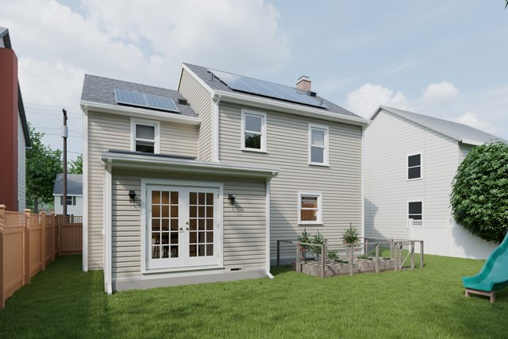
Back Patio: Deck or Stone
Ideas for the space off the dining room's new French doors, built on your rough shape along the back wall (about 11 × 16 ft, plus a 5 ft strip past the doors) and stretched 2–3 ft toward the yard where steps or a table need it. With the A/C moved to the north side, every option now runs right into the sheltered corner by the bump-out, and all stay clear of the playset. The furniture is generic: it's there to show how each layout lives.
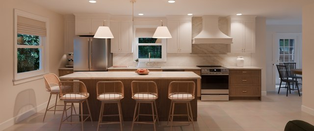
Kitchen: The Light Over the Island
Four lights over the island: the brass linear pendant the model has had as a placeholder; the two you found, the Rennnsan Remy (two brushed-gold cones over a 48-inch bar) and the GoYeel (three linen drums on a 41-inch gold bar); and the Savoy House M100122NB (two pleated white cones on a 44-inch natural-brass bar), the real product closest to the placeholder. Each hangs from the same spot over the island; the evening view shows how each one lights it.
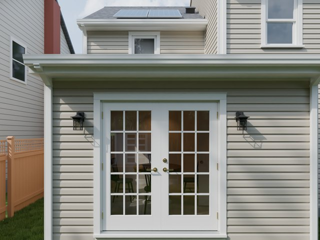
Back Door: Wall Lights
Three outdoor wall lights, a pair either side of the dining room's French doors, about 67 inches up. They're dusk-to-dawn, so they're off by day and on in the evening view.

Back Porch: A Covered Seat by the Doors
Somewhere to sit just outside the dining room's French doors, under a roof. Each cover is shown over two porches, one hardwood deck and one raised bluestone. Both sit one step (about 7½ in) below the doors: building code allows that at a door that isn't the house's main exit, and it buys headroom under every cover without touching the roof. A new roof can't sit higher than the existing eave because the upstairs windows are just above it, so the flat roof and the gable keep their eaves at the old roof line; with the step down and a beam flush with the ceiling, the flat roof gets about 8 ft of headroom. It's shown 11 ft deep over the full porch and 8 ft deep over a porch shortened to match. The gable can also open into its pediment with a curved arch (about 9 ft 5 in at the centre). The gable hips back into the old roof and stops short of the solar panels, so none of them need to move. The two aluminium pergolas are off-the-shelf kits. Each cover also brings string lights out to two cedar posts on the lawn. In the evening views the porch and string lights are on (they run dusk to dawn).